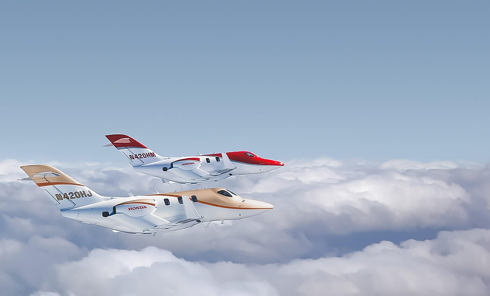

Will HondaJet disrupt air transportation?
Another opportunity for Honda to Execute lessons from the innovator Dilemma


Seems Like Honda is doing what it has already done with the motorcycle market because this jet division that I just came to know about is really an amazing company because it looks like they are building really amazing tech-enabled aircraft and partnering with others that are also building really amazing tech-enabled air transportation services and products. I still know nothing about the economic value of this honda spinout neither its strategy but this looked in my eyes like a tech-enabled product that could disrupt the air transportation businesses using the same strategy that honda accidentally used to enter the US Market. If this Honda Jet venture partners with the right Americans and foreign companies and startups it could disrupt the US regional air transportation and other regional markets. You may guess that I am betting that the theory of the innovator dilemma of Clayton Christensen can be applied in this business case but I could be completely wrong.
If fuel efficiency and hedging are well incorporated into this tech-enabled aircraft as part of its core feature and allowing it to be ecologically compliant by the means of financial compensation of the amount of CO2 produced and economically less ‘energivore’ to the air operators This could be the next model of air transportation given the level of air crowd we will be able to manage and live with.
Also, I am taking a big bet on HondaJet because it is really connected to some tech-enabled crazy ideas that I thought were good years ago which now seem to make sense with HondaJet and venture like it.
I ended writing this article because while writing an article about a token for air transportation I got to make a google search with the keyword airline token that led me to this also really good and amazing tech-enabled service called JetToken which is not like the token I was thinking about.
Then I thought that it was worth to notice you about all these tech-enabled services and products before finishing and publishing this tech-enabled idea about this token for airline transportation.